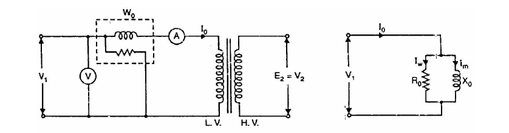

This test is conducted to determine the iron losses (or core losses) and parameters Ro and Xo of the transformer.
In this test, the rated voltage is applied to the primary (usually low-voltage winding) while the secondary is left opencircuited. The applied primary voltage V1 is measured by the voltmeter, the noload current Io by ammeter and no-load input power Wo by wattmeter as shown in the figure.
As the normal rated voltage is applied to the primary, therefore, normal iron losses will occur in the transformer core. Hence wattmeter will record the iron losses and small copper loss in the primary.
Since no-load current Io is very small (usually 2-10 % of rated current). Cu losses in the primary under no-load condition are negligible as compared with iron losses. Hence, wattmeter reading practically gives the iron losses in the transformer.
It is reminded that iron losses are the same at all loads.
|  |
Equivalent circuit of transformer on no-load. |